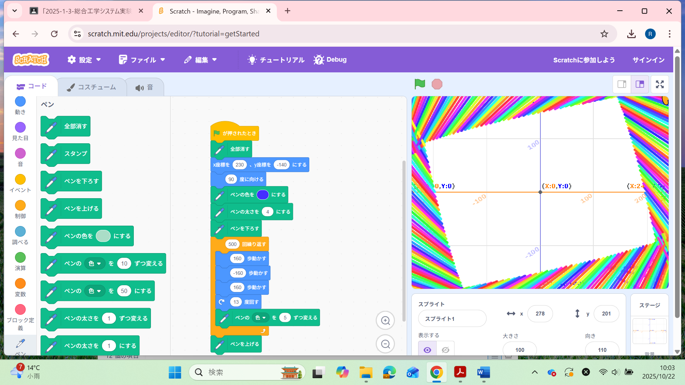
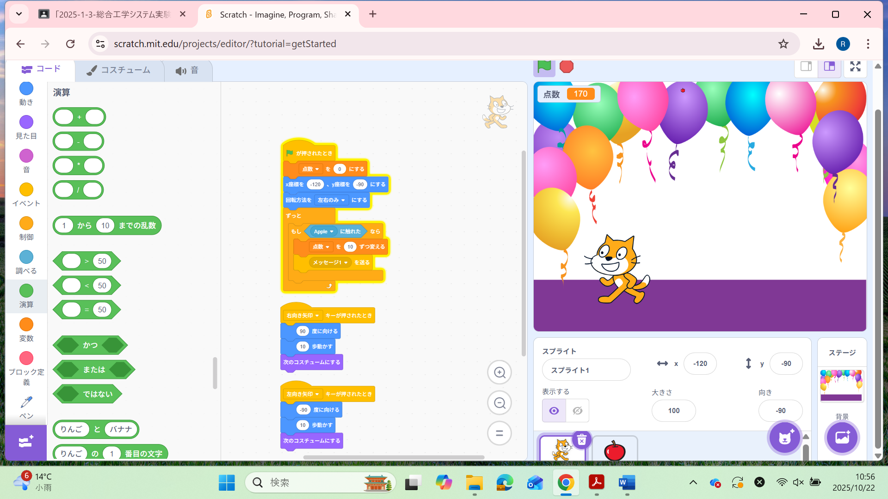

1-1 サイエンスアート

1.内容
学習した内容を説明する文章を
自分で考えて作成する（50文字以上．100文字程度を推奨．※生成AIを使ってはいけない）
プログラムを実行するときに、キャラクターの位置を移動させるプログラムでx座標230，
y座標-140にします。また、キャラクターの動きを500回繰り返すことでペンを動かして
長方形の枠を書くようにプログラムしました。
2.感想
学習した内容を実践したときに自分が感じた感想を
自分で考えた文章で作成する（50文字以上．100文字程度を推奨．※生成AIを使ってはいけない）
キャラクターを動かすときに同じ色にしなかった理由は、一つの色にすると線が引かれない
部分が白色で目立ってしまい美しい長方形が見えなくなってしまうから虹色にするように
色をループさせるようにプログラムしました。
1-2 ゲーム

1.内容
学習した内容を説明する文章を
自分で考えて作成する（50文字以上．100文字程度を推奨．※生成AIを使ってはいけない)
キャラクターを動かすときにキーボードの矢印キーを押すことで左右に操作することができ
ます。このときにリンゴが地面に落ちるまでにキャラクターの体に触れることができたら、
左上にポイントを付けるプログラムになっています。
2.感想
学習した内容を実践したときに自分が感じた感想を
自分で考えた文章で作成する（50文字以上．100文字程度を推奨．※生成AIを使ってはいけない）
このゲームを作成するときに難易度を高くするために、リンゴのサイズを小さくする工夫を
しました。また、落ちるスピードにも乱数のプログラムを付け加えることでやりがいのある
ものにすることができました。